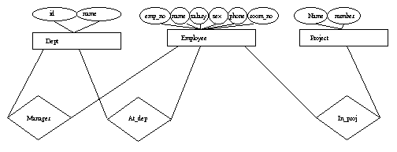

2 Getting Started with Mnesia
This chapter introduces Mnesia. Following a brief discussion about the first initial setup, a Mnesia database example is demonstrated. This database example will be referenced in the following chapters, where this example is modified in order to illustrate various program constructs. In this chapter, the following mandatory procedures are illustrated by examples:
- Starting an Erlang session and specifying a directory for the Mnesia database.
- Initializing a database schema.
- Starting Mnesia and creating the required tables.
2.1 Starting Mnesia for the first time
Following is a simplified demonstration of a Mnesia system startup. This is the dialogue from the Erlang shell:
unix> erl -mnesia dir '"/tmp/funky"'
Erlang (BEAM) emulator version 4.9
Eshell V4.9 (abort with ^G)
1>
1> mnesia:create_schema([node()]).
ok
2> mnesia:start().
ok
3> mnesia:create_table(funky, []).
{atomic,ok}
4> mnesia:info().
---> Processes holding locks <---
---> Processes waiting for locks <---
---> Pending (remote) transactions <---
---> Active (local) transactions <---
---> Uncertain transactions <---
---> Active tables <---
funky : with 0 records occupying 269 words of mem
schema : with 2 records occupying 353 words of mem
===> System info in version "1.0", debug level = none <===
opt_disc. Directory "/tmp/funky" is used.
use fall-back at restart = false
running db nodes = [nonode@nohost]
stopped db nodes = []
remote = []
ram_copies = [funky]
disc_copies = [schema]
disc_only_copies = []
[{nonode@nohost,disc_copies}] = [schema]
[{nonode@nohost,ram_copies}] = [funky]
1 transactions committed, 0 aborted, 0 restarted, 1 logged to disc
0 held locks, 0 in queue; 0 local transactions, 0 remote
0 transactions waits for other nodes: []
ok
In the example above the following actions were performed:
- The Erlang system was started from the UNIX prompt with a flag -mnesia dir '"/tmp/funky"'. This flag indicates to Mnesia which directory will store the data.
- A new empty schema was initialized on the local node by evaluating mnesia:create_schema([node()]). The schema contains information about the database in general. This will be thoroughly explained later on.
- The DBMS was started by evaluating mnesia:start().
- A first table was created, called funky by evaluating the expression mnesia:create_table(funky, []). The table was given default properties.
- mnesia:info() was evaluated and subsequently displayed information regarding the status of the database on the terminal.
2.2 An Introductory Example
A Mnesia database is organized as a set of tables. Each table is populated with instances (Erlang records). A table also has a number of properties, such as location and persistence.
In this example we shall:
- Start an Erlang system, and specify the directory where the database will be located.
- Initiate a new schema with an attribute that specifies on which node, or nodes, the database will operate.
- Start Mnesia itself.
- Create and populate the database tables.
The Example Database
In this database example, we will create the database and relationships depicted in the following diagram. We will call this database the Company database.
Figure 2.1: Company Entity-Relation Diagram
The database model looks as follows:
- There are three entities: employee, project, and department.
-
There are three relationships between these entities:
- A department is managed by an employee, hence the manager relationship.
- An employee works at a department, hence the at_dep relationship.
- Each employee works on a number of projects, hence the in_proj relationship.
Defining Structure and Content
We first enter our record definitions into a text file named company.hrl. This file defines the following structure for our sample database:
-record(employee, {emp_no,
name,
salary,
sex,
phone,
room_no}).
-record(dept, {id,
name}).
-record(project, {name,
number}).
-record(manager, {emp,
dept}).
-record(at_dep, {emp,
dept_id}).
-record(in_proj, {emp,
proj_name}).
The structure defines six tables in our database. In Mnesia, the function mnesia:create_table(Name, ArgList) is used to create tables. Name is the table name Note: The current version of Mnesia does not require that the name of the table is the same as the record name, See Chapter 4: Record Names Versus Table Names.
For example, the table for employees will be created with the function mnesia:create_table(employee, [{attributes, record_info(fields, employee)}]). The table name employee matches the name for records specified in ArgList. The expression record_info(fields, RecordName) is processed by the Erlang preprocessor and evaluates to a list containing the names of the different fields for a record.
The Program
The following shell interaction starts Mnesia and initializes the schema for our company database:
% erl -mnesia dir '"/ldisc/scratch/Mnesia.Company"'
Erlang (BEAM) emulator version 4.9
Eshell V4.9 (abort with ^G)
1> mnesia:create_schema([node()]).
ok
2> mnesia:start().
ok
The following program module creates and populates previously defined tables:
-include_lib("stdlib/include/qlc.hrl").
-include("company.hrl").
init() ->
mnesia:create_table(employee,
[{attributes, record_info(fields, employee)}]),
mnesia:create_table(dept,
[{attributes, record_info(fields, dept)}]),
mnesia:create_table(project,
[{attributes, record_info(fields, project)}]),
mnesia:create_table(manager, [{type, bag},
{attributes, record_info(fields, manager)}]),
mnesia:create_table(at_dep,
[{attributes, record_info(fields, at_dep)}]),
mnesia:create_table(in_proj, [{type, bag},
{attributes, record_info(fields, in_proj)}]).
The Program Explained
The following commands and functions were used to initiate the Company database:
- % erl -mnesia dir '"/ldisc/scratch/Mnesia.Company"'. This is a UNIX command line entry which starts the Erlang system. The flag -mnesia dir Dir specifies the location of the database directory. The system responds and waits for further input with the prompt 1>.
- mnesia:create_schema([node()]). This function has the format mnesia:create_schema(DiscNodeList) and initiates a new schema. In this example, we have created a non-distributed system using only one node. Schemas are fully explained in Chapter 3:Defining a Schema.
- mnesia:start(). This function starts Mnesia. This function is fully explained in Chapter 3: Starting Mnesia.
Continuing the dialogue with the Erlang shell will produce the following:
3> company:init().
{atomic,ok}
4> mnesia:info().
---> Processes holding locks <---
---> Processes waiting for locks <---
---> Pending (remote) transactions <---
---> Active (local) transactions <---
---> Uncertain transactions <---
---> Active tables <---
in_proj : with 0 records occuping 269 words of mem
at_dep : with 0 records occuping 269 words of mem
manager : with 0 records occuping 269 words of mem
project : with 0 records occuping 269 words of mem
dept : with 0 records occuping 269 words of mem
employee : with 0 records occuping 269 words of mem
schema : with 7 records occuping 571 words of mem
===> System info in version "1.0", debug level = none <===
opt_disc. Directory "/ldisc/scratch/Mnesia.Company" is used.
use fall-back at restart = false
running db nodes = [nonode@nohost]
stopped db nodes = []
remote = []
ram_copies =
[at_dep,dept,employee,in_proj,manager,project]
disc_copies = [schema]
disc_only_copies = []
[{nonode@nohost,disc_copies}] = [schema]
[{nonode@nohost,ram_copies}] =
[employee,dept,project,manager,at_dep,in_proj]
6 transactions committed, 0 aborted, 0 restarted, 6 logged to disc
0 held locks, 0 in queue; 0 local transactions, 0 remote
0 transactions waits for other nodes: []
ok
A set of tables is created:
- mnesia:create_table(Name,ArgList). This function is used to create the required database tables. The options available with ArgList are explained in Chapter 3: Creating New Tables.
The company:init/0 function creates our tables. Two tables are of type bag. This is the manager relation as well the in_proj relation. This shall be interpreted as: An employee can be manager over several departments, and an employee can participate in several projects. However, the at_dep relation is set because an employee can only work in one department. In this data model we have examples of relations that are one-to-one (set), as well as one-to-many (bag).
mnesia:info() now indicates that a database which has seven local tables, of which, six are our user defined tables and one is the schema. Six transactions have been committed, as six successful transactions were run when creating the tables.
To write a function which inserts an employee record into the database, there must be an at_dep record and a set of in_proj records inserted. Examine the following code used to complete this action:
insert_emp(Emp, DeptId, ProjNames) ->
Ename = Emp#employee.name,
Fun = fun() ->
mnesia:write(Emp),
AtDep = #at_dep{emp = Ename, dept_id = DeptId},
mnesia:write(AtDep),
mk_projs(Ename, ProjNames)
end,
mnesia:transaction(Fun).
mk_projs(Ename, [ProjName|Tail]) ->
mnesia:write(#in_proj{emp = Ename, proj_name = ProjName}),
mk_projs(Ename, Tail);
mk_projs(_, []) -> ok.
-
insert_emp(Emp, DeptId, ProjNames) ->. The insert_emp/3 arguments are:
- Emp is an employee record.
- DeptId is the identity of the department where the employee is working.
- ProjNames is a list of the names of the projects where the employee are working.
The insert_emp(Emp, DeptId, ProjNames) -> function creates a functional object. Functional objects are identified by the term Fun. The Fun is passed as a single argument to the function mnesia:transaction(Fun). This means that Fun is run as a transaction with the following properties:
- Fun either succeeds or fails completely.
- Code which manipulates the same data records can be run concurrently without the different processes interfering with each other.
The function can be used as:
Emp = #employee{emp_no= 104732,
name = klacke,
salary = 7,
sex = male,
phone = 98108,
room_no = {221, 015}},
insert_emp(Me, 'B/SFR', [Erlang, mnesia, otp]).
Functional Objects (Funs) are described in the Erlang Reference Manual, "Fun Expressions".
Initial Database Content
After the insertion of the employee named klacke we have the following records in the database:
| emp_no | name | salary | sex | phone | room_no |
| 104732 | klacke | 7 | male | 99586 | {221, 015} |
An employee record has the following Erlang record/tuple representation: {employee, 104732, klacke, 7, male, 98108, {221, 015}}
| emp | dept_name |
| klacke | B/SFR |
At_dep has the following Erlang tuple representation: {at_dep, klacke, 'B/SFR'}.
| emp | proj_name |
| klacke | Erlang |
| klacke | otp |
| klacke | mnesia |
In_proj has the following Erlang tuple representation: {in_proj, klacke, 'Erlang', klacke, 'otp', klacke, 'mnesia'}
There is no difference between rows in a table and Mnesia records. Both concepts are the same and will be used interchangeably throughout this book.
A Mnesia table is populated by Mnesia records. For example, the tuple {boss, klacke, bjarne} is a record. The second element in this tuple is the key. In order to uniquely identify a table row both the key and the table name is needed. The term object identifier, (oid) is sometimes used for the arity two tuple {Tab, Key}. The oid for the {boss, klacke, bjarne} record is the arity two tuple {boss, klacke}. The first element of the tuple is the type of the record and the second element is the key. An oid can lead to zero, one, or more records depending on whether the table type is set or bag.
We were also able to insert the {boss, klacke, bjarne} record which contains an implicit reference to another employee which does not yet exist in the database. Mnesia does not enforce this.
Adding Records and Relationships to the Database
After adding additional record to the Company database, we may end up with the following records:
Employees
{employee, 104465, "Johnson Torbjorn", 1, male, 99184, {242,038}}.
{employee, 107912, "Carlsson Tuula", 2, female,94556, {242,056}}.
{employee, 114872, "Dacker Bjarne", 3, male, 99415, {221,035}}.
{employee, 104531, "Nilsson Hans", 3, male, 99495, {222,026}}.
{employee, 104659, "Tornkvist Torbjorn", 2, male, 99514, {222,022}}.
{employee, 104732, "Wikstrom Claes", 2, male, 99586, {221,015}}.
{employee, 117716, "Fedoriw Anna", 1, female,99143, {221,031}}.
{employee, 115018, "Mattsson Hakan", 3, male, 99251, {203,348}}.
Dept
{dept, 'B/SF', "Open Telecom Platform"}.
{dept, 'B/SFP', "OTP - Product Development"}.
{dept, 'B/SFR', "Computer Science Laboratory"}.
Projects
%% projects
{project, erlang, 1}.
{project, otp, 2}.
{project, beam, 3}.
{project, mnesia, 5}.
{project, wolf, 6}.
{project, documentation, 7}.
{project, www, 8}.
The above three tables, titled employees, dept, and projects, are the tables which are made up of real records. The following database content is stored in the tables which is built on relationships. These tables are titled manager, at_dep, and in_proj.
Manager
{manager, 104465, 'B/SF'}.
{manager, 104465, 'B/SFP'}.
{manager, 114872, 'B/SFR'}.
At_dep
{at_dep, 104465, 'B/SF'}.
{at_dep, 107912, 'B/SF'}.
{at_dep, 114872, 'B/SFR'}.
{at_dep, 104531, 'B/SFR'}.
{at_dep, 104659, 'B/SFR'}.
{at_dep, 104732, 'B/SFR'}.
{at_dep, 117716, 'B/SFP'}.
{at_dep, 115018, 'B/SFP'}.
In_proj
{in_proj, 104465, otp}.
{in_proj, 107912, otp}.
{in_proj, 114872, otp}.
{in_proj, 104531, otp}.
{in_proj, 104531, mnesia}.
{in_proj, 104545, wolf}.
{in_proj, 104659, otp}.
{in_proj, 104659, wolf}.
{in_proj, 104732, otp}.
{in_proj, 104732, mnesia}.
{in_proj, 104732, erlang}.
{in_proj, 117716, otp}.
{in_proj, 117716, documentation}.
{in_proj, 115018, otp}.
{in_proj, 115018, mnesia}.
The room number is an attribute of the employee record. This is a structured attribute which consists of a tuple. The first element of the tuple identifies a corridor, and the second element identifies the actual room in the corridor. We could have chosen to represent this as a record -record(room, {corr, no}). instead of an anonymous tuple representation.
The Company database is now initialized and contains data.
Writing Queries
Retrieving data from DBMS should usually be done with mnesia:read/3 or mnesia:read/1 functions. The following function raises the salary:
raise(Eno, Raise) ->
F = fun() ->
[E] = mnesia:read(employee, Eno, write),
Salary = E#employee.salary + Raise,
New = E#employee{salary = Salary},
mnesia:write(New)
end,
mnesia:transaction(F).Since we want to update the record using mnesia:write/1 after we have increased the salary we acquire a write lock (third argument to read) when we read the record from the table.
It is not always the case that we can directly read the values from the table, we might need to search the table or several tables to get the data we want, this is done by writing database queries. Queries are always more expensive operations than direct lookups done with mnesia:read and should be avoided in performance critical code.
There are two methods for writing database queries:
- Mnesia functions
- QLC
Mnesia functions
The following function extracts the names of the female employees stored in the database:
mnesia:select(employee, [{#employee{sex = female, name = '$1', _ = '_'},[], ['$1']}]).
Select must always run within an activity such as a transaction. To be able to call from the shell we might construct a function as:
all_females() ->
F = fun() ->
Female = #employee{sex = female, name = '$1', _ = '_'},
mnesia:select(employee, [{Female, [], ['$1']}])
end,
mnesia:transaction(F).The select expression matches all entries in table employee with the field sex set to female.
This function can be called from the shell as follows:
(klacke@gin)1> company:all_females().
{atomic, ["Carlsson Tuula", "Fedoriw Anna"]}
See also the Pattern Matching chapter for a description of select and its syntax.
Using QLC
This section contains simple introductory examples only. Refer to QLC reference manual for a full description of the QLC query language. Using QLC might be more expensive than using Mnesia functions directly but offers a nice syntax.
The following function extracts a list of female employees from the database:
Q = qlc:q([E#employee.name || E <- mnesia:table(employee),
E#employee.sex == female]),
qlc:e(Q),
Accessing mnesia tables from a QLC list comprehension must always be done within a transaction. Consider the following function:
females() ->
F = fun() ->
Q = qlc:q([E#employee.name || E <- mnesia:table(employee),
E#employee.sex == female]),
qlc:e(Q)
end,
mnesia:transaction(F).This function can be called from the shell as follows:
(klacke@gin)1> company:females().
{atomic, ["Carlsson Tuula", "Fedoriw Anna"]}
In traditional relational database terminology, the above operation would be called a selection, followed by a projection.
The list comprehension expression shown above contains a number of syntactical elements.
- the first [ bracket should be read as "build the list"
- the || "such that" and the arrow <- should be read as "taken from"
Hence, the above list comprehension demonstrates the formation of the list E#employee.name such that E is taken from the table of employees and the sex attribute of each records is equal with the atom female.
The whole list comprehension must be given to the qlc:q/1 function.
It is possible to combine list comprehensions with low level Mnesia functions in the same transaction. If we want to raise the salary of all female employees we execute:
raise_females(Amount) ->
F = fun() ->
Q = qlc:q([E || E <- mnesia:table(employee),
E#employee.sex == female]),
Fs = qlc:e(Q),
over_write(Fs, Amount)
end,
mnesia:transaction(F).
over_write([E|Tail], Amount) ->
Salary = E#employee.salary + Amount,
New = E#employee{salary = Salary},
mnesia:write(New),
1 + over_write(Tail, Amount);
over_write([], _) ->
0.The function raise_females/1 returns the tuple {atomic, Number}, where Number is the number of female employees who received a salary increase. Should an error occur, the value {aborted, Reason} is returned. In the case of an error, Mnesia guarantees that the salary is not raised for any employees at all.
33>company:raise_females(33).
{atomic,2}